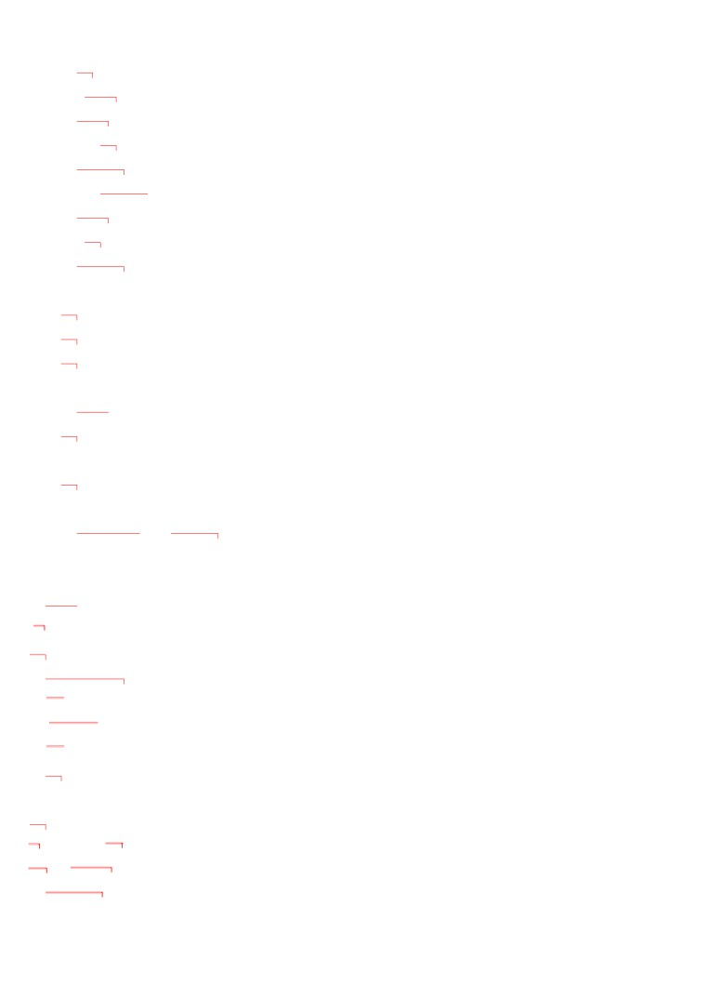
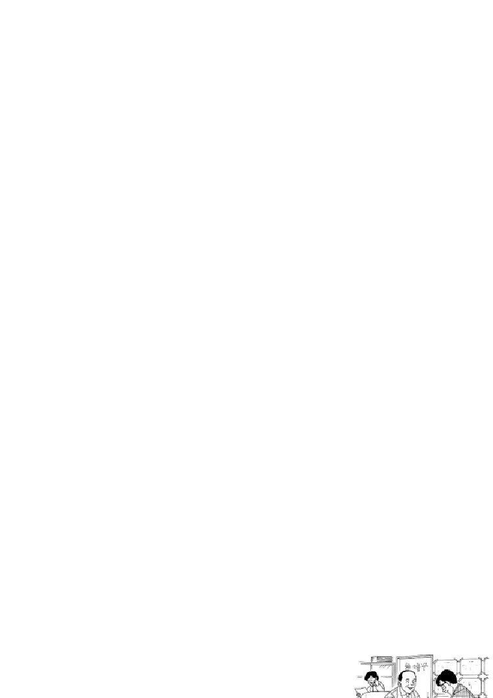
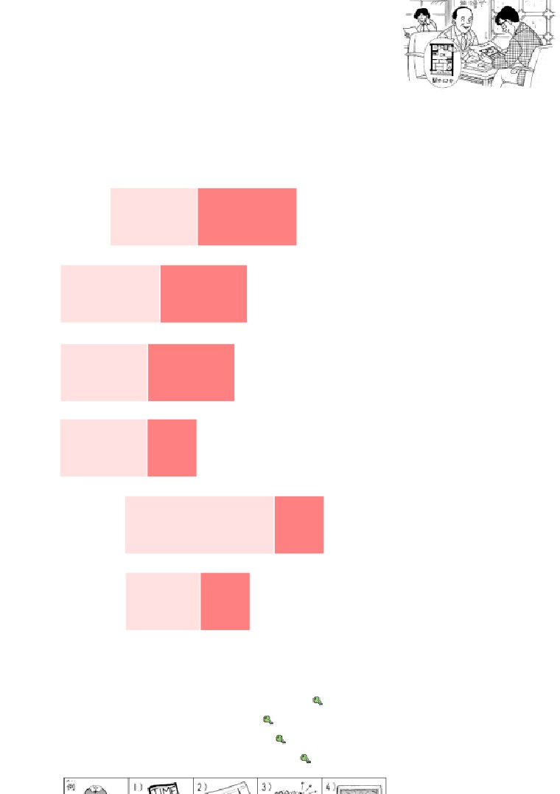
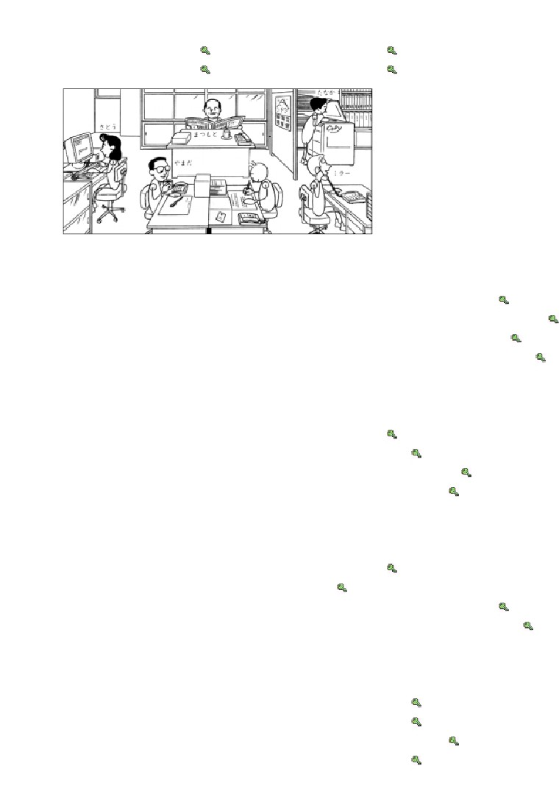
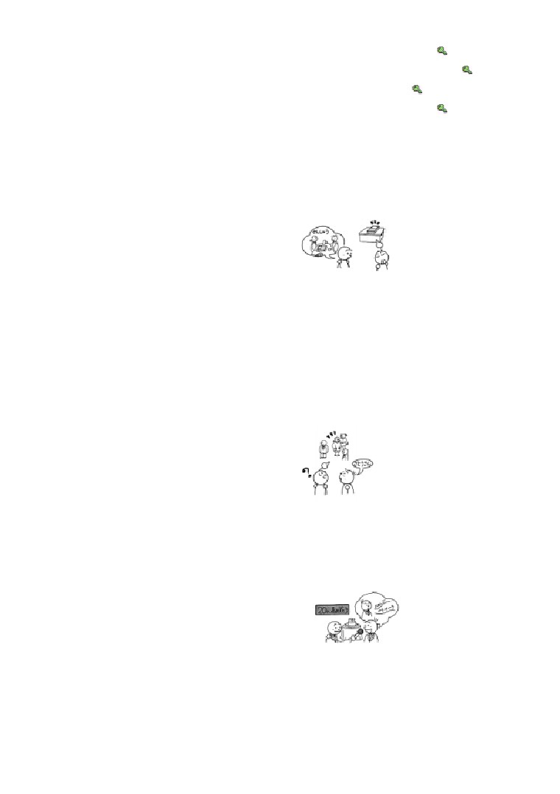
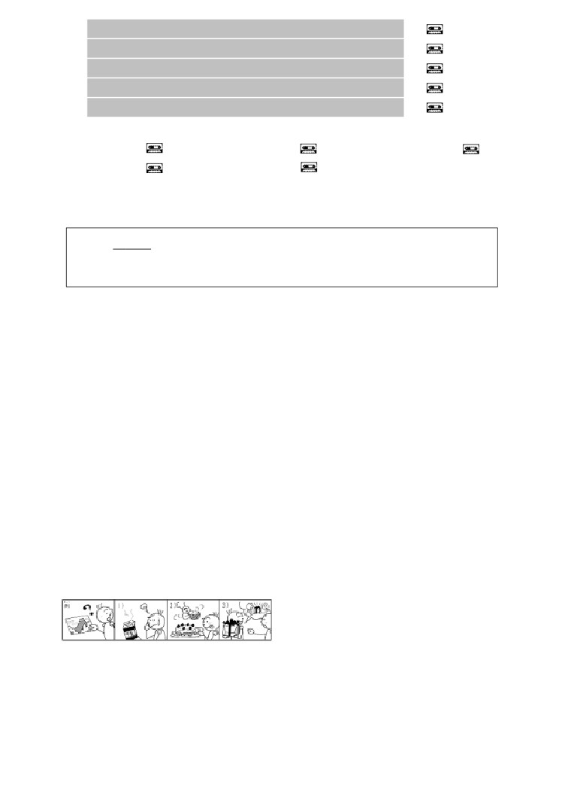
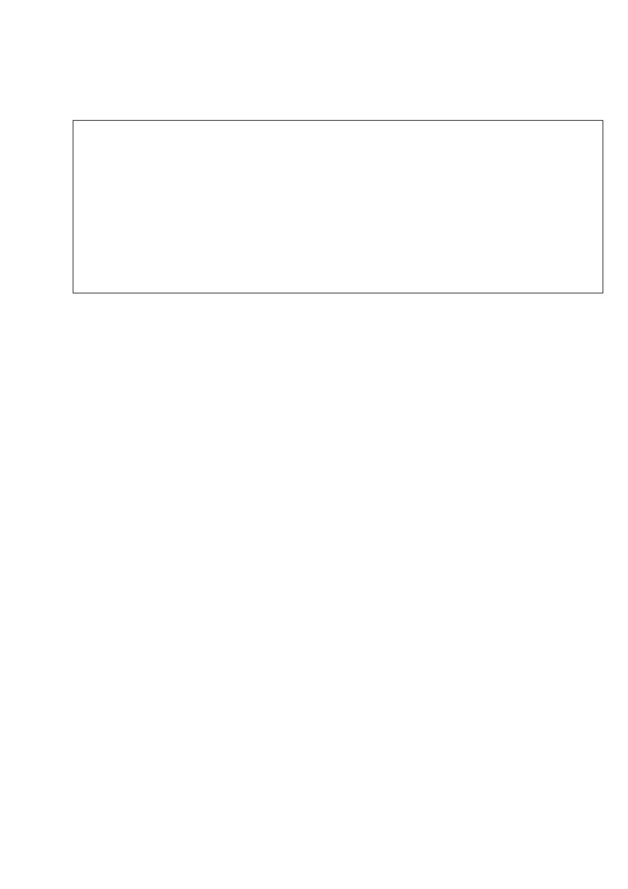
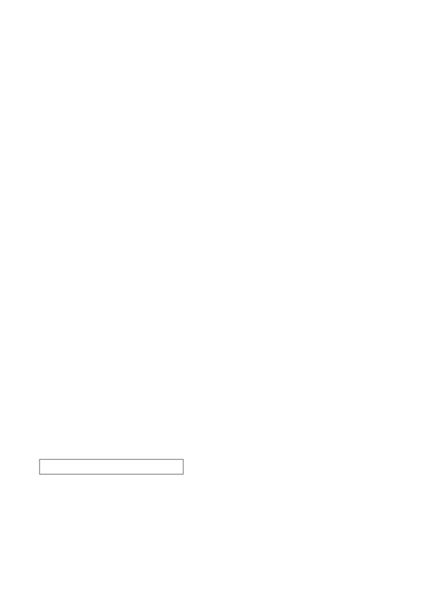

第２２
課
課:22 (頁:1/8)
ことば
1.
きます
Ⅱ
着ます
穿〔襯衫等〕
［シャツを～］
2.
はきます
Ⅰ
穿〔鞋，褲子〕
［くつを～］
［靴を～］
3.
かぶります
Ⅰ
戴〔帽子等〕
［ぼうしを～］
［帽子を～］
4.
かけます
Ⅱ
戴〔眼鏡〕
［めがねを～］
［眼鏡を～］
5.
うまれます
Ⅱ
生まれます
出生
6. コート
大衣，外套
7. スーツ
西裝
8. セーター
毛衣
9. ぼうし
帽子
帽子
10.
めがね
眼鏡
眼鏡
11. よく
經常
12. おめでとう ございます。
恭喜。（用於生日，婚禮，新年等時）
かい わ
■会話
こちら
這（“これ”的禮貌形）
や ちん
家賃
房租
うーん。
我想想看。
ダイニングキチン
兼作餐廳的廚房
わ しつ
和室
和室
お
い
押し入れ
日式壁櫥
ふ とん
布団
棉被和墊被
アパート
公寓
---以下單字請自行練習發音---
パリ
巴黎
ばん り
ちょうじょう
万里の 長城
萬里長城
よ か かい はつ
余暇開発センター
休閒活動開發中心
はく しょ
レジャー白書
休閒白皮書
ぶん けい
文型

つく
課:22 (頁:2/8)
1.
これは ミラーさんが 作った ケーキです。
ひと
2.
あそこに いる 人は ミラーさんです。
なら
わす
3.
きのう 習った ことばを 忘れました。
か
もの
い
じ かん
4.
買い物に 行く 時間が ありません。
れい ぶん
例文
ばん り
ちょうじょう
と
しゃ しん
1.
これは 万里の 長城で 撮った 写真です。
…そうですか。 すごいですね。
え
2.
カリナさんが かいた 絵は どれですか。
うみ
え
…あれです。 あの 海の 絵です。
き もの
き
ひと
3.
あの 着物を 着て いる 人は だれですか。
き むら
…木村さんです。
やま だ
おく
はじ
あ
ところ
4.
山田さん、奥さんに 初めて 会った 所は どこですか。
おお さか じょう
…大阪城です。
き むら
い
5.
木村さんと 行った コンサートは どうでしたか。
…とても よかったです。
6. どう しましたか。
か
かさ
…きのう 買った 傘を なくしました。
ほ
7. どんな うちが 欲しいですか。
ひろ
にわ
ほ
…広い 庭が ある うちが 欲しいです。
こん ばん
の
い
8. 今晩 飲みに 行きませんか。
こん ばん
とも だち
あ
やく そく
…すみません。 今晩は ちょっと 友達に 会う 約束が
あります。
かい わ
会話
どんな アパートが いいですか
ふ どう さん や
不動産屋：
こちらは いかがですか。
や ちん
まん えん
家賃は 8万円です。
えき
とお
ワ ン： うーん……。 ちょっと 駅から 遠いですね。
ふ どう さん や
不動産屋：
じゃ、こちらは？
べん り
えき
ある
ぶん
便利ですよ。 駅から 歩いて 3分ですから。
ワ ン：

課:22 (頁:3/8)
そうですね。
わ しつ
ひと
ダイニングキチンと 和室が 1つと……。
なん
すみません。ここは 何ですか。
ふ どう さん や
お
い
ふ とん
い
ところ
不動産屋：
押し入れです。 布団を 入れる 所ですよ。
ワ ン： そうですか。
み
この アパート、きょう 見る ことが できますか。
ふ どう さん や
いま
い
不動産屋：
ええ。今から 行きましょうか。
ねが
ワ ン： ええ、お願いします。
れん しゅう
練習 Ａ
おんな
ひと
ざっ し
1.
これは
女の 人が
よむ
雑誌です。
に ほん
日本で
うって いない
カリナさんに
かりた
めがね
ひと
やま だ
2.
あの 眼鏡を
かけて いる
人は 山田さんです。
りょ こう
スキー旅行に
いかない
かい ぎ
い けん
会議で 意見を
いった
ところ
よこ はま
3.
ワットさんが
すんで いる
所は 横浜です。
さ とう
佐藤さんが
うまれた
わたしが
いきたい
たな
ふく
み
4.
あの 棚に
ある
服を 見せて ください。
パーティーで
きる
パリで
かった
えき
ほ
5.
わたしは 駅から
ちかい
うちが 欲しいです。
ひろ
にわ
広い 庭が
ある
カラオケ・パーティーが できる
て がみ
じ かん
6.
わたしは 手紙を
かく
時間が ありません
ほん
本を
よむ
あさ
朝ごはんを たべる
れん しゅう
練習 Ｂ
れい
はは
はは
1.
例： 母に もらいました
→
これは 母に もらった コートです。
か
1)
タワポンさんに 借りました
→
きょう と
と
2)
京都で 撮りました
→
つく
3)
わたしが 作りました
→
4)
カリナさんが かきました
→

れい
ひと
課:22 (頁:4/8)
2.
例： ミラーさん
→
ミラーさんは どの 人ですか。
でん わ
ひと
……電話を かけて いる 人です。
まつ もと ぶ ちょう
やま だ
1)
松本部長
→
2)
山田さん
→
さ とう
た なか
3)
佐藤さん
→
4)
田中さん
→
れい
い
きっ さ てん
3. 例：
＜ミラーさんが よく 行きます＞喫茶店は コーヒーが おいしいです
い
きっ さ てん
→ ミラーさんが よく 行く 喫茶店は コーヒーが おいしいです。
はたら
びょう いん
こう べ
1)
＜ワンさんが 働いて います＞ 病院は 神戸に あります
→
か
もの
や さい
やす
2)
＜わたしが いつも 買い物します＞ スーパーは 野菜が 安いです
→
おとうと
す
3)
＜弟が 住んで います＞ アパートは おふろが ありません
→
い
てら
しず
4)
＜きのう わたしが 行きました＞ お寺は きれいで、静かでした
→
れい
くろ
き
ひと
4.
例： ＜黒い スーツを 着て います＞ 人は だれですか
くろ
き
ひと
→ 黒い スーツを 着て いる 人は だれですか。
りょ こう
い
ひと
1)
＜旅行に 行きません＞ 人は だれですか →
き
ひと
なん にん
2)
＜パーティーに 来ます＞ 人は 何人ですか
→
はじ
しゅ じん
あ
ところ
3)
＜初めて ご主人に 会いました＞ 所は どこですか
→
きょう と
と
4)
＜京都で 泊まりました＞ ホテルは どうでしたか
→
れい
な ら
と
しゃ しん
み
5. 例：
＜奈良で 撮りました＞ 写真を 見せて ください
な ら
と
しゃ しん
み
→ 奈良で 撮った 写真を 見せて ください。
かれ
み や げ
か
1)
＜彼に あげます＞ お土産を 買います
→
い
もの
す
2)
＜要りません＞ 物を 捨てます
→
びょういん
くすり
の
3)
＜病院で もらいました＞ 薬を 飲まなければ なりません
→
となり
すわ
ひと
し
4)
＜イーさんの 隣に 座って います＞ 人を 知って いますか
→
れい
そと
す
6.
例： ＜外で します＞ スポーツが 好きです
そと
す
→ 外で する スポーツが 好きです。
ひと
す
1)
＜ユーモアが わかります＞ 人が 好きです
→
お
つくえ
ほ
2)
＜パソコンを 置きます＞ 机が 欲しいです
→
かい しゃ
ひと
つか
に ほん ご
3)
＜会社の 人が 使います＞ 日本語が わかりません →
はは
つく
りょう り
た
4)
＜母が 作りました＞ 料理が 食べたいです
→

れい
にち よう び
こ
あそ
やく そく
課:22 (頁:5/8)
7.
例： ＜日曜日は 子どもと 遊びます＞ 約束が あります
にち よう び
こ
あそ
やく そく
→ 日曜日は 子どもと 遊ぶ 約束が あります。
こん ばん
とも だち
しょく じ
やく そく
1)
＜今晩は 友達と 食事します＞ 約束が あります
→
し やく しょ
い
よう じ
2)
＜きょうは 市役所へ 行きます＞ 用事が あります
→
あさ しん ぶん
よ
じ かん
3)
＜朝 新聞を 読みます＞ 時間が ありません →
でん わ
じ かん
4)
＜電話を かけます＞ 時間が ありませんでした
→
れん しゅう
練習 Ｃ
せん しゅう
か
ほん
1. Ａ: 先週 買った 本は どこに ありますか。
つくえ
うえ
Ｂ: えーと、 あの 机の 上に ありますよ。
Ａ: あ、そうですか。 どうも。
ふ じ さん
と
1) 富士山で 撮りました
しゃ し ん
写真
た なか
田中さんに もらいました
2)
カタログ
か
きのう 借りました
3)
ビデオ
ひと
2. Ａ: あの 人は どなたですか。
ひと
Ｂ: どの 人ですか。
あか
き
ひと
Ａ: 赤い セーターを 着て いる 人です。
さ とう
Ｂ: ああ、佐藤さんですよ。
めが ね
1) 眼鏡を かけて います
まつ もと
松本さん
ぼう し
2)
帽子を かぶって います
やま だ
おく
山田さんの 奥さん
しろ
くつ
3)
白い 靴を はいて います
ワットさん
さい
たん じょう び
3. Ａ:
20歳の 誕生日 おめでとう ございます。
Ｂ: ありがとう ございます。
し ごと
Ａ: どんな 仕事を したいですか。
Ｂ: そうですね。
に ほん ご
つか
し ごと
日本語を 使う 仕事を したいです。
かい しゃ
はたら
1)
会社で 働きます
おお
ざんぎょう
大きくて、あまり 残業が ありません
ひと
けっ こん
2)
人と 結婚します
あか
ユーモアが あって、明るいです
ところ
す
3)
所に 住みます
ちか
やま
近くに 山が あって、スキーが できます

もん だい
課:22 (頁:6/8)
問題
れい
とうきょう
1.
1)
…例： 東京です。
れい
くるま
2)
…例： 車です。
れい
3)
…例： いいえ、いません。
れい
4)
…例： はい、あります。
れい
た
りょう り
す
5)
…例： うちで 食べる 料理の ほうが 好きです。
2.
1) ( ○ )
2) ( ○ )
3) ( × )
4) ( ○ )
5) ( ○ )
れい
ね
ひと
げん き
3. 例：
( よく 寝る ) 人は 元気です。
ね
と しょ かん
か
さけ
の
よく 寝ます
図書館で 借りました
お酒を 飲みません
き
にわ
マリアさんから 来ました
庭が あります
にわ
ほ
1)
わたしは（ 庭が ある ） うちが 欲しいです。
さけ
の
ひと
す
2)
わたしは （ お酒を 飲まない ） 人が 好きです。
と しょか ん
か
ほん
3)
（ 図書館で 借りた ） 本を なくしました。
き
て がみ
つくえ
うえ
4)
（ マリアさんから 来た ） 手紙は 机の 上に あります。
れい
くろ
き
ひと
4.
例： あの 黒い シャツを 着て いる 人は （ だれ ） ですか。
……ミラーさんです。
しん ぶん
1)
ここに あった 新聞は （ どこ ） ですか。
うえ
……テレビの 上に あります。
つく
マリアさんが 作った ケーキは （ どう ） でしたか。
2)
……とても おいしかったです。
あたら
いちばん 新しい パソコンは （ どれ ） ですか。
3)
……これです。
れい
と
と
しゃ しん
5. 例： どこで 撮りましたか。→ これは どこで 撮った 写真ですか。
か
1)
いつ 買いましたか。
か
ぎゅうにゅう
→ （ これは いつ 買った 牛乳ですか。）
つく
2)
だれが 作りましたか。
つく
→ （ これは だれが 作った ケーキですか。）
3)
だれに もらいましたか。
→ （ これは だれに もらった プレゼントですか。）
れい
ぎん こう
い
じ かん
6.
例： （ 銀行へ 行く ） 時間が ありません。

にち よう び
とも だち
えい が
み
やく そく
課:22 (頁:7/8)
1)
日曜日は （ 友達と 映画を 見る ） 約束が あります。
し やく しょ
い
よう じ
2)
（ 市役所へ 行く ） 用事が あります。
ひる
た
じ かん
3)
（ 昼ごはんを 食べる ） 時間が ありません。
に ほん じん
やす
ひ
なに
7.
日本人は 休みの 日に 何を しますか
ひと
つか
かね
した 人 使った お金
しょく じ
で
えん
食事に 出かける…………………………………66.0%
3,480円
い
カラオケに 行く…………………………………55.8
1,860
み
ビデオを 見る……………………………………44.3
520
い
ディズニーランドなどへ 行く…………………39.2
5,810
パチンコを する…………………………………28.1
3,140
し りょう
よ か かい はつ
はく しょ
資料 余暇開発センター「レジャー白書1995」
た
ひと
すく
1)
（ × ）レストランなどで ごはんを 食べる 人は 少ないです。
い
ひと
ひと
おお
2)
（ ○ ）カラオケに 行く 人は パチンコを する 人より 多いです。
かね
つか
3)
（ × ）カラオケは いちばん お金を 使いません。
文法
１ . 修飾名詞
第2課、第8課中已經學過了修飾名詞的方法。
ミラーさんの うち
米勒先生的家
（第2課）
あたら
新しい うち
新的房子 （第8課）
きれいな うち
漂亮的房子
（第8課）
日語中在修飾名詞時，不論是單詞還是句子，修飾的部分一定放在被修飾部分之
前。本課中我們將學習上述方法以外修飾名詞的方法。
２
句子修飾名詞
1)
被修飾的名詞前是普通形。「な
形容詞句」時將「～だ
」改成「～な
」；而「名
詞句」時，則是將「～だ
」改為「～の
」。
い
ひと
①
行く 人 要去京都的人
い
ひと
きょう と
行かない 人 不去京都的人
京都へ
い
ひと
行った 人 去了京都的人
い
ひと
{
行かなかった 人 沒去京都的人
せ
たか
かみ
くろ
ひと
背が 高くて、 髪が 黒い 人
個子高、頭髮黑的人
しん せつ
ひと
親切で、きれいな 人
親切而漂亮的人
さい
ひと
６５歳の 人
65歲的人
2) 句子中不論用途為何的名詞，都可以拿出句外用原來的句子來修飾。
せん しゅう えい が
み
せん しゅう
み
えい が
② わたしは 先週 映画を 見ました →わたしが 先週 見た 映画
我上週看了電影
→
我上週看的電影

びょう いん
はたら
はたら
びょう いん
課:22 (頁:8/8)
③ ワンさんは 病院で 働いて います →ワンさんが 働いている 病院
王先生在醫院工作
→
王先生工作的醫院
とも だち
あ
あ
とも だち
④ わたしは あした 友達に 会います →わたしが あした 会う 友達
我明天去見朋友
→
我明天去見的朋友
②③④句的劃線部分成為被修飾語後，原來句中各自搭配的助詞都不要了。
3)
有些句子中被修飾的名詞（以下例句中「ミラーさんが すんで いた うち」，
可以使用在各種句型中。
す
⑤ これは ミラーさんが 住んで いた うちです。
這是米勒先生住過的房子。
す
ふる
⑥ ミラーさんが 住んで いた うちは 古いです。
米勒先生住過的房子很舊。
す
か
⑦ ミラーさんが 住んで いた うちを 買いました。
買下了米勒先生住過的房子。
す
す
⑧ わたしは ミラーさんが 住んで いた うちが 好きです。
我喜歡米勒先生住過的房子。
す
ねこ
⑨ ミラーさんが 住んで いた うちに 猫が いました。
米勒先生住過的房子裡有貓。
す
い
⑩ ミラーさんが 住んで いた うちへ 行った ことが あります。
我去過米勒先生住過的房子。
３
名詞 が
修飾名詞的句子，主語用「が
」。
つく
ミラーさんは ケーキを 作りました。
↓ 米勒先生做了蛋糕。
つく
⑪ これは ミラーさんが 作った ケーキです。
這是米勒先生做的蛋糕。
え
す
⑫ わたしは カリナさんが かいた 絵が 好きです。
我喜歡卡莉娜小姐畫的畫。
かれ
う
ところ
し
⑬ ［あなたは］ 彼が 生まれた 所を 知って いますか。
你知道他出生的地方嗎？
じ かん やく そく よう じ
４
動詞字典形 時間／約束／用事
要表達做某事的時間時，應如例句⑭
般，用動詞的字典形將做的內容放在名詞「
じかん」之前。
あさ
た
じ かん
⑭ わたしは 朝ごはんを 食べる 時間が ありません。
我沒有吃早飯的時間。
另外，還可以用動詞的字典形表現約定等的內容如下。
とも だち
えい が
み
やく そく
⑮ わたしは 友達と 映画を 見る 約束が あります。
我和朋友約好了去看電影。
し やく しょ
い
よう じ
⑯ きょうは 市役所へ 行く 用事が あります。
今天有事要去市政府。